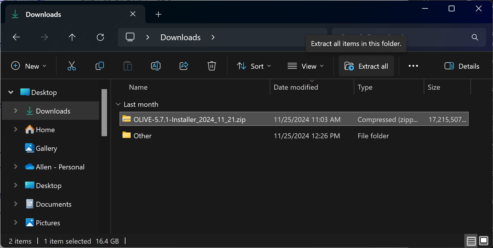

OLIVE on Windows Setup and Usage
Introduction
With the release of version 5.7.1, OLIVE now supports natively running on the Windows operating system. The Windows native OLIVE release simplifies the installation, management, and launching of OLIVE and OLIVE components by providing an OS-integrated installer tool, and a new GUI-based launcher utility. The streamlined procedure for using these new features is outlined below.
Requirements and Assumptions
This release was built with specific hardware and OS targets in mind. Compatibility assumes a 64-bit Intel CPU architecture, and an available Nvidia GPU meeting the requirements below. The software can be run without a GPU, but may require reconfiguration, or disabling the GPU configuration through the OLIVE Windows Launcher, and the speed performance of certain plugins (especially ASR) will be impacted.
Windows OS Requirements
OLIVE on Windows has targeted Windows 11 version 23H2 for compatibility. All testing was performed on this version.
GPU Requirements
In order for a GPU to be used by OLIVE, it must be an Nvidia GPU with the appropriate drivers installed. We have tested to verifty compatibility with:
- NVIDIA GPU Driver version R535 or greater (primarily tested using 546.01, 556.12, 566)
- NVIDIA CUDA 12.2 or higher (primarily tested using CUDA 12.3, 12.5)
Due to the volume of GPUs available on the market, we cannot guarantee that all models are supported, or that all will perform acceptably speed-wise. Most of our testing was performed on high-end laptop class GPUs like the RTX 3080-Ti, with 16GB of available VRAM. Lower amounts of available GPU memory may limit how many GPU-utilizing plugins can be loaded into memory at one time.
Installation
The distribution format for the OLIVE Windows installer is a single zip archive.

This archive contains the installation script, and several binary files used by it during installation. This can be seen once the deliverable is unzipped by selecting the archive and either right clicking then selecting "Extract all" from the context menu, or selecting "Extract all" from the top function bar in Explorer:
To begin the install process, doubleclick the "OLIVE-5.7.1-Installer.exe" application in the resulting folder.
Windows Defender Note (Click to expand)
Because SRI is not submitting OLIVE to Microsoft for malware analysis, the Windows Defender SmartScreen may flag it as an "Unrecognized App" and provide a warning pop-up and prevent the OLIVE install from beginning. To proceed past this, choose "More info" and then "Run anyway."
Once the installer starts up, the user will be prompted to provide an installation location for OLIVE. By default, this will be the current user's Local AppData directory:
C:\Users\<username>\AppData\Local\Programs\OLIVE
But any location with the appropriate permissions for the current user should be valid. Next, the user will be prompted to choose whether or not they would like a desktop icon created (recommended), and then installation progresses as expected for a standard Windows installation package.
Now installation is complete, and OLIVE should be ready for execution. The contents of the installation should resemble this screenshot:
But no manual intervention or configuration in this location should be needed, unless performing a specialty GPU configuration, installing new separately-delivered plugins, or trying to retrieve logs for troubleshooting.
The screenshot also shows the unins000.exe uninstaller executable that can be run manually as an alternative to the Windows uninstall procedure outlined below.
After installation, if the option for creating it was selected, there will be an OLIVE on Windows shortcut/icon on the Desktop that can be used to access the OLIVE Launcher to get started using OLIVE.
Launcher
The OLIVE launcher can be accessed in several different ways:
- Double-clicking the OLIVE Desktop Icon
- Finding OLIVE in the Windows App List
- Accessing OLIVE in the Windows Start Menu
Launcher Anatomy
No matter which method you use to access the OLIVE Launcher, you're greeted with the same screen:
There are controls that provide access to:
- Starting (and Stopping) the OLIVE server
- Launching Nightingale UI
- Launching / Accessing the Raven Batch UI
- Disabling GPU configuration
- Accessing GPU hardware information for troubleshooting
- OLIVE log display window for status and troubleshooting
The next section covers using these functions.
Server Management
Starting and stopping the OLIVE server is done with the Start and Stop buttons in the lower right.
Clicking Start will trigger launching the OLIVE server, which will be up and waiting for a connection from one of the OLIVE UIs, or any other properly configured external client.
Likewise, clicking Stop will shut down this server:
Note
Stop will NOT shut down Nightingale, but it will sever Nightingale's connection to the OLIVE server, so no new OLIVE queries will be available until OLIVE server is restarted.
Note
Likewise, Stop will NOT close down any browser tabs that have already loaded Raven UI, but it will be shutting down the service that is hosting the UI, so any operation or page refresh in Raven that occurs after OLIVE server shutdown will fail.
GPU Configuration and Info
By default, OLIVE 5.7.1 Windows distribution packages are configured assuming that a single Nvidia GPU is available on the hardware OLIVE will be installed on, and will be leveraging this for key plugins where a GPU makes a significant difference in the execution speed of the provided plugins. Namely, the end-to-end ASR plugin. If a GPU is not available, OLIVE can still be run, but at the cost of speed for these plugins. A Use GPU toggle has been provided to quickly disable this GPU configuration in such instances (shown here as #4). Un-selecting this toggle will bypass any OLIVE configuration setup, and re-set all plugins to use CPU only.
The launcher also provides a GPU Info button (shown here as #5). This button opens a pop-up info display:
This display can be useful when troubleshooting if OLIVE is having trouble accessing a GPU, perhaps for missing, incompatible, or improper GPU driver installation, or help diagnose if the GPU is running out of available memory; whether from OLIVE tasks or some other application using it.
If for some reason there is one or more compatible GPUs available, but the provided GPU configuration isn't appropriate, the configuration assigning GPU device resources to different plugin domains can be modified. Please follow the standard GPU Configuration instructions, with the important caveat that the location of the olive.conf file is different for Windows. By default, the file will be located in:
C:\Users\<username>\AppData\Local\Programs\OLIVE\oliveAppData\olive.conf
If a custom installation location was chosen at installation time, the file will instead be located at:
<user-selected-install-location>\OLIVE\oliveAppData\olive.conf
OLIVE UIs
Nightingale
Choose the Launch Nightingale button to launch Nightingale. Nightingale will start up and automatically attempt to establish a connection to the OLIVE server running on the machine.
Refer to the primary Nightingale documentation for usage instructions.
Raven UI
Choose the Launch Raven UI button to launch a brower tab directed to the port where OLIVE Web Broker is serving the Raven UI. The default system browser will be used.
Refer to the primary Raven UI documentation for Raven UI usage instructions.
Uninstallation
Uninstallation is now performed through the native Windows "Add or remove programs" Control Panel feature. To uninstall, open the Windows system Settings, and navigate to the "Apps" pane, and "Installed Apps" list. Alternately, use the Windows search feature to look for "Add or remove programs" to navigate directly here.
Enter "OLIVE" in the search field:
Then select the 3-dot menu and choose "Uninstall."
Confirm that you're sure you want to remove:

Wait for the uninstaller to complete:
Where you're given the Uninstall Success message.
OLIVE is now uninstalled.
Enrollments and Server Logs
Note that by design, the OLIVE uninstall process currently leaves enrollments (such as speakers or keywords of interest) behind - this is in case a user would like to consult the logs for troubleshooting information, or in case they would like to carry enrollments forward into a new OLIVE version or transfer to another machine. These files can be manually removed by navigating to the install location (default is C:\Users\